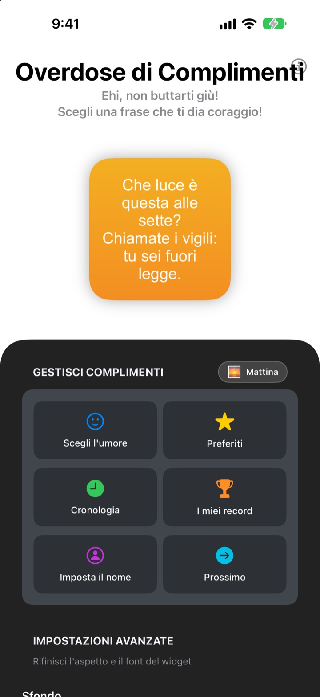
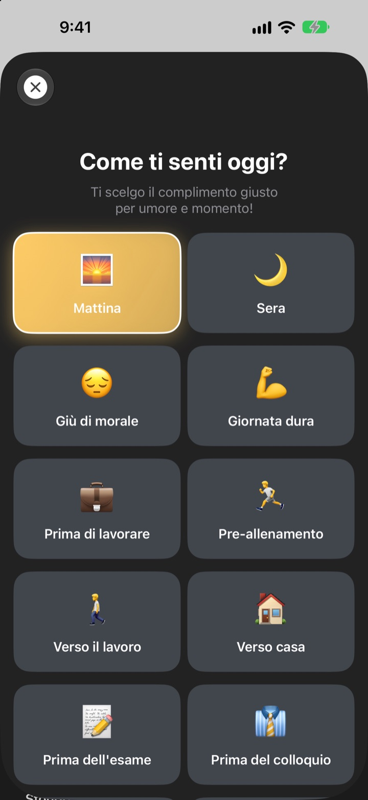
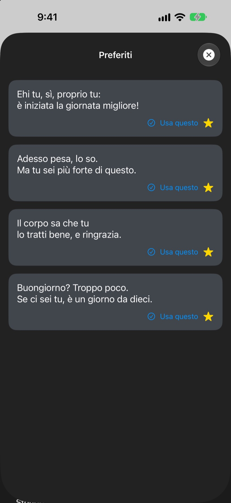
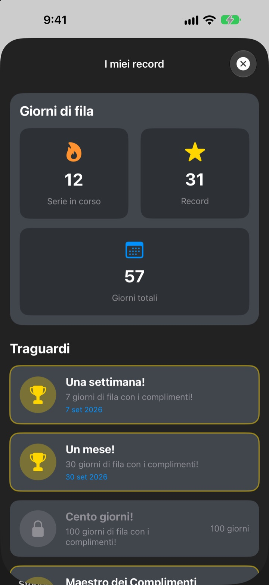

Ogni volta che prendi il telefono,
il tuo fan numero uno ti aspetta
Overdose di Complimenti è un widget che ti fa complimenti decisamente troppo, e apposta. Di mattina un complimento da mattina, prima del colloquio uno da colloquio. Font, colori e sfondo li scegli tu.
Un solo acquisto e hai tutto. Niente abbonamenti né pubblicità.

Prenditi un complimento adesso
Scegli un umore e il widget mostra il complimento giusto. Tocca Prossimo per pescarne uno a caso tra tutti i 281.
Il tuo critico più severo? Forse sei tu
Verso il lavoro, prima del colloquio, verso casa, la vocina in testa non fa che brontolare. Overdose di Complimenti si schiera dalla tua parte dalla schermata Home, più volte al giorno, un po' più del ragionevole. Appena ti scappa un sorriso, torna anche un po' di fiducia.
Il complimento giusto per l'umore
Scegli tra 14 umori e situazioni come Mattina, Verso il lavoro, Giornata dura, Prima del colloquio o Prima del date, e il complimento adatto arriva subito sul widget. Indeciso? C'è anche Casuale.

Tieni quelli che ami
Tocca la stella per salvarlo nei Preferiti e ritrova i precedenti nella Cronologia. Tocca Usa questo e va dritto sul widget.

Passa ogni giorno e il conto sale
Ogni giorno in cui dai un'occhiata allunga la tua serie. A 7, 30 o 100 giorni di fila, e a 50 e 100 giorni in totale, sblocchi un traguardo.

Si parte in tre passi
- 1
Scegli l'umore
Apri
Scegli l'umoree tocca quello del momento. - 2
Personalizza il widget
Nelle impostazioni avanzate scegli font, colore del testo, sfondo e frequenza.
- 3
Mettilo nella schermata Home
Tieni premuto sulla schermata Home, tocca + e cerca Overdose di Complimenti.
Il widget, come vuoi tu
- Font
- 13 font, tra cui Futura, Georgia e Marker Felt
- Colore del testo
- Quello che preferisci
- Sfondo
- Una sfumatura di due colori o una delle foto incluse
- Allineamento
- A sinistra, al centro o a destra
- Interlinea
- Righe più strette o più ariose
- Frequenza di aggiornamento
- Un complimento nuovo ogni 5, 15 o 30 minuti
La dimensione del widget si sceglie quando lo aggiungi alla schermata Home.
Lo compri una volta e basta
L'app
- 281 complimenti per 14 umori
- Un widget per la schermata Home a tuo gusto
- Preferiti e Cronologia
- Serie e traguardi
Sostieni lo sviluppatore
- Scegli una mancia piccola, media o grande
- Non sblocca nulla. È solo un modo per dire grazie
Solo se e quando ti va.
Niente abbonamenti, niente acquisti extra, niente pubblicità.
Domande frequenti
Come aggiungo il widget?
Tieni premuto uno spazio vuoto della schermata Home finché le icone non tremano, tocca + in alto, cerca Overdose di Complimenti e scegli una dimensione.
Come viene scelto il complimento successivo?
Quando scegli un umore, un complimento adatto arriva subito sul widget. Poi il widget ne mostra uno a caso tra tutti i 281, con la frequenza che hai scelto. Nell'app puoi anche toccare Prossimo per andare avanti da te.
Posso cambiare font o frequenza del widget?
Sì. Nelle impostazioni avanzate cambi font, colore del testo, sfondo, allineamento, interlinea e frequenza di aggiornamento: 5, 15 o 30 minuti.
Il widget non è cambiato subito.
È iOS a decidere quando ridisegnare i widget, quindi a volte resta un po' indietro rispetto alla frequenza scelta. Apri l'app e chiudila, e il widget si aggiorna.
Come funziona la serie?
Ogni giorno di fila in cui guardi un complimento allunga la serie. In I miei record vedi la serie attuale, il tuo record, i giorni totali e i traguardi.
Preferiti e cronologia sono spariti.
Tutto è salvato solo sul tuo dispositivo, quindi non ti segue se elimini l'app o cambi telefono. Se non hai eliminato nulla e sono spariti lo stesso, scrivici un'email.
I miei dati vengono inviati da qualche parte?
No. L'app non raccoglie dati personali. Preferiti e cronologia restano sul tuo dispositivo.
Come segnalo un bug o propongo un'idea?
Direttamente da Contatta lo sviluppatore nell'app, via email o in DM su Instagram a @lee25_ios. Rispondiamo appena possibile.
Domande o suggerimenti? Scrivi a leeo@kakao.com.